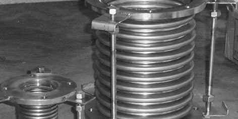
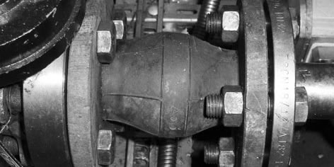

Juntas de expansión
Las juntas de expansión son estructuras en forma de acordeón que compensan las expansiones y contracciones de ductos sometidos a fuertes diferencias de presión o calor, disminuyen, las vibraciones y el ruido, ya que permiten desplazamientos sin deformaciones. Existen dos tipos de juntas de expansión: las metálicas y las de hule.
juntas de expansión

Las juntas de expansión metálicas flexibles son dispositivos empleados en la industría para evitar el desalineamiento de la tuberías cuando están sometidas a los factores temperatura y presión, su diseño nos ayuda a controlar movimientos axiales, laterales y angulares, originados en los equipos estacionarios de la industria química, petroquímica y de proceso.
Tipos de Juntas de Expansión
Las juntas de expansión se diseñan y se calculan de acuerdo a las condiciones de operación, por lo que a partir de un fuelle metálico se puede hacer diferentes diseños de construcción, algunos de ellos son:
Tipo simple
Diseñada de un solo fuelle que permite absorber movimientos axilares y pequeños movimientos laterales, angulares, viraciones o combinados en un solo plano.
Tipo duplex
Diseñada con dos fuelles y un anclaje central, lo cual permite descompener un sistema de tubería en dos independientes, se usa en líneas de tuberías largas para disminuir por medio de anclajes los movimientos axiales, sin embargo no son apropiadas para absorber grandes movimientos laterales.
Tipo universal
Diseñada con dos fuelles y un tubo intermedio que permite absorber a diferencia que la Duplex grandes movimientos laterales también en un solo plano.
Juntas de expansión de hule
Las juntas de expansión de hule son utilizadas como compensadores de dilatación o amortiguadores de vibraciones en aplicaciones simples. Las cuales son fabricadas en Neopropeno pudiendo también elaborarse en diversos elastómeros tales como Hypalon, caucho butílico y natural, revestidas de Teflón. Fabricadas en diámetros desde 2" hasta 20".
Algunas de sus ventajas son:
- Compensa movimientos auxilares laterales y angulares
- Aisla ruidos y reduce la propagación de vibraciones
- Ocupa una miníma longuitud de instalación
- Bajo peso
- Resistente a la corrosión y erosión
- No tiene continuidad eléctrica
- No requiere empaquetadura